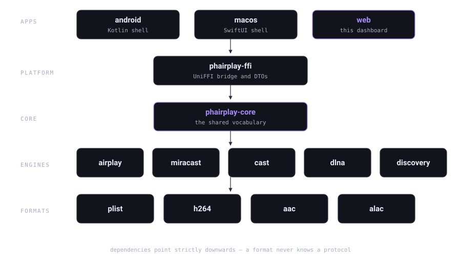

Kein Konto
Keine Registrierung, keine Anmeldung, kein Lizenzserver, der angerufen werden müsste. Du installierst den Empfänger, er erscheint im Netzwerk, und das ist die komplette Einrichtung.
Ein Empfänger für AirPlay 2, Miracast, Google Cast und DLNA/UPnP. Er läuft auf deinem Rechner, spricht nur mit den Geräten im lokalen Netzwerk — und verlangt nichts: kein Konto, keine Werbung, keine Telemetrie, keine Cloud.
Dashboard öffnen Quelltext ansehen
AGPL-3.0-or-later Rust 2024 · Edition 1.85+ Nur lokales Netzwerk Linux · macOS · Windows · Android
Ein Empfänger steht zwischen deinem Telefon und deinem Bildschirm. Alles, was er tut, ist sichtbar — genau das ist der Punkt eines selbst gehosteten Empfängers. Diese vier Versprechen sind der Grund, warum es das Projekt gibt.
Keine Registrierung, keine Anmeldung, kein Lizenzserver, der angerufen werden müsste. Du installierst den Empfänger, er erscheint im Netzwerk, und das ist die komplette Einrichtung.
Keine Anzeigen, keine gesponserten Einträge, keine Partnerintegrationen, kein Telemetrie-SDK. Das Projekt finanziert sich nicht über Werbung, und im Code spricht nichts mit einem Werbekunden.
Der Empfänger misst nicht, was du abspielst, meldet keine Nutzung irgendwohin und schreibt keine Statistiken außerhalb deines Rechners. Die einzigen Daten, die entstehen, sind das Bild und der Ton, um die es gebeten wurde.
Der Empfänger funktioniert auch mit gezogenem Netzkabel. Es gibt keinen Server dazwischen, der das Projekt abschalten, bremsen oder verändern könnte — du führst den Code aus, das Ergebnis gehört dir.
Vier Protokoll-Engines teilen sich einen Kern: dasselbe Sitzungsmodell, dieselben Zähler, dieselben Härtungsregeln. Jede Engine meldet sich im lokalen Netzwerk an und nimmt dort einen Sender an.
| Protokoll | Dienstsuche | Transport | Medien | Regel |
|---|---|---|---|---|
| AirPlay 2 | _airplay._tcp, _raop._tcp |
RTSP mit RTP über UDP | H.264-Video, AAC-LC / AAC-ELD, Apple Lossless | Ein Sender zur Zeit |
| Miracast / WFD | _miracast._tcp |
RTSP-Steuerkanal mit RTP | H.264-Video, Linear PCM | Ein Sender zur Zeit |
| Google Cast | _googlecast._tcp |
CastV2 über TLS | H.264, VP8, AAC-LC, MP3, Linear PCM | Mehrere Sender gleichzeitig |
| DLNA / UPnP | SSDP | HTTP mit SOAP und GENA | Audio-Wiedergabe: AAC, Opus, MP3, FLAC, Linear PCM | Ein Sender zur Zeit |
AirPlay meldet zwei Diensttypen an: Wer nur _airplay._tcp
ankündigt, bleibt für manche Sender unsichtbar. Google Cast ist die dokumentierte
Ausnahme von der Ein-Sender-Regel — ein Cast-Empfänger bedient mehrere Sender
gleichzeitig.
Abhängigkeiten zeigen ausschließlich nach unten. Ein Format-Crate kennt nie ein
Protokoll, ein Protokoll greift nie in die Plattform, und der Kern kennt nie eine
Engine. Diese Regel steht in docs/design/BUILD-CONTRACT.md, und gegen
sie wird jedes Crate gebaut.

Das Projekt ist ein reiner Cargo-Workspace. Es gibt keinen Installer, keinen Dienst-Installer und kein Konto, das angelegt werden müsste.
Das Repository enthält den ganzen Stack: den Kern, die vier Engines, die Formate und das Dashboard.
git clone https://github.com/mazer666/PhairPlayRust.git
cd PhairPlayRustJedes Crate ist getestet — auch die Negativtests, die die Parser angreifen. Der Build-Contract ist die Referenz für den Aufbau des Workspace.
cargo build --release
cargo test --workspaceDie Web-Anwendung startet die Engines, liefert das Dashboard aus und bindet ausschließlich auf das Loopback-Interface — das Bedienpanel ist ein lokales Werkzeug, kein Netzwerkdienst.
cargo run --release --manifest-path apps/web/Cargo.tomlDas Panel wird auf der Loopback-Adresse des Prozesses ausgeliefert. Es zeigt den Zustand der vier Empfänger, die laufenden Sitzungen, den Durchsatz des laufenden Streams und die Codec-Referenz — und es kann einen Empfänger ein- und ausschalten.
Offene Grenzen. FairPlay-geschützte Streams bleiben verschlüsselt: Der Empfänger kann DRM-Inhalte nicht entschlüsseln. AirPlay 2, Miracast und DLNA nehmen einen Sender zur Zeit an; Google Cast ist die dokumentierte Ausnahme und bedient mehrere Sender gleichzeitig. Das Dashboard sagt dir immer, welches der beiden Fälle du gerade siehst.
Ein Empfänger in einem Heimnetz ist für jedes Gerät darin erreichbar. Das Bedrohungsmodell sagt das, und die Grenzen im Code folgen daraus.